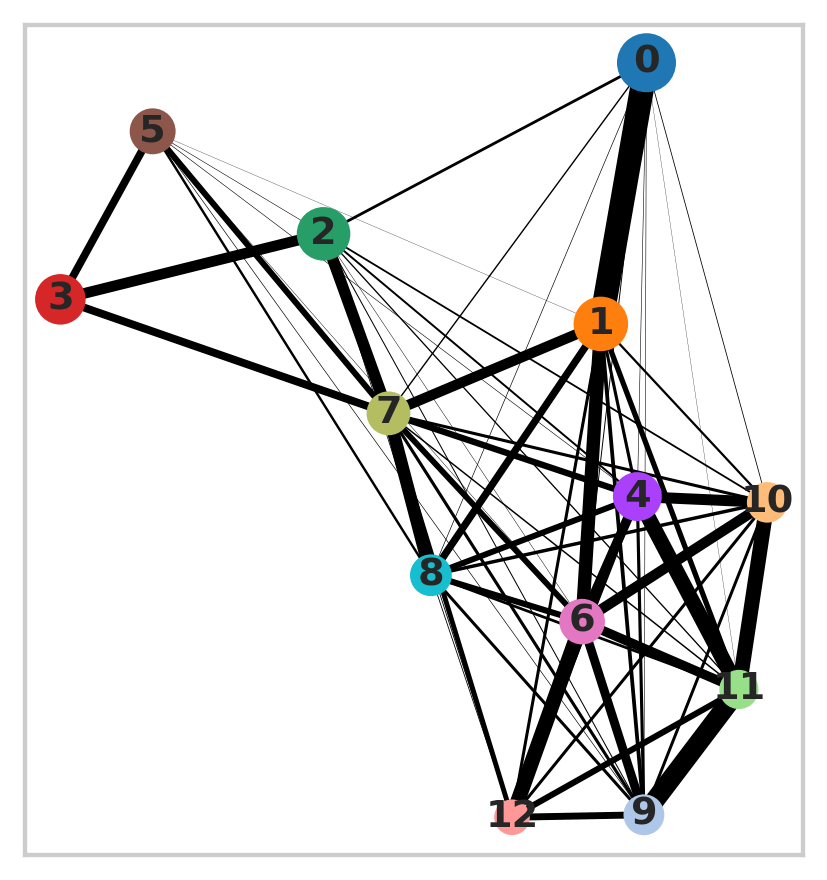
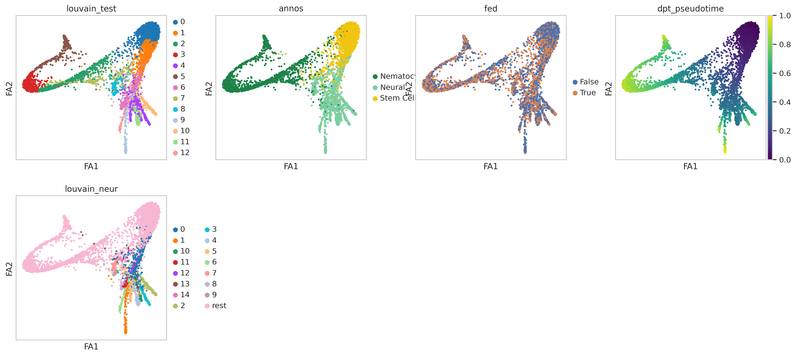
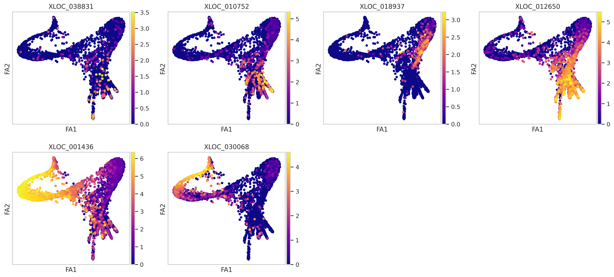
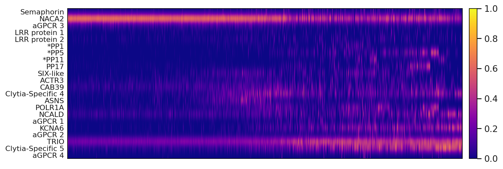
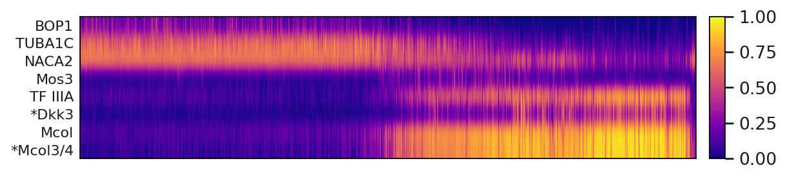
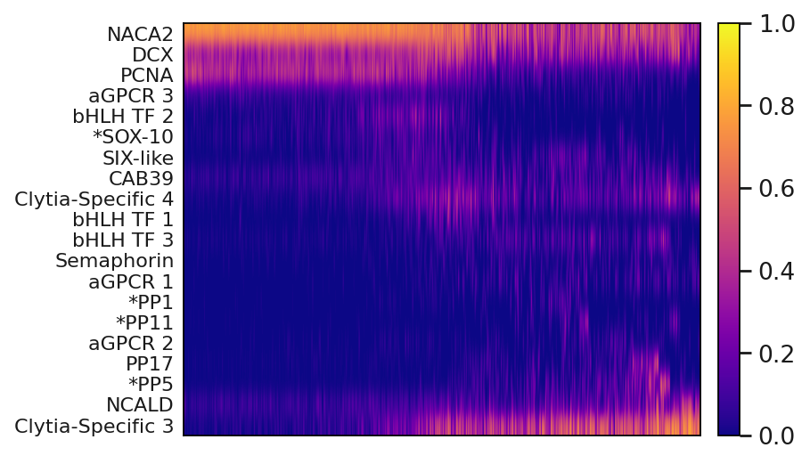
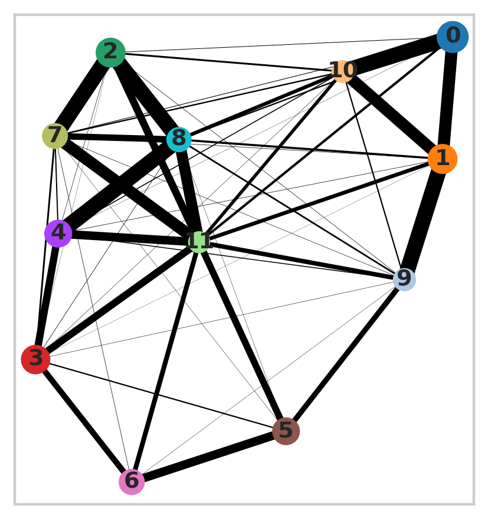
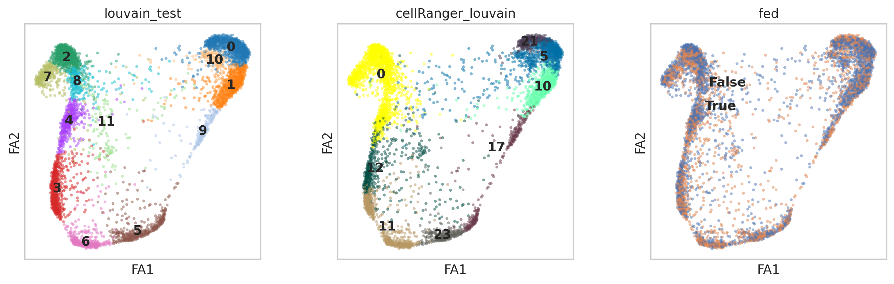
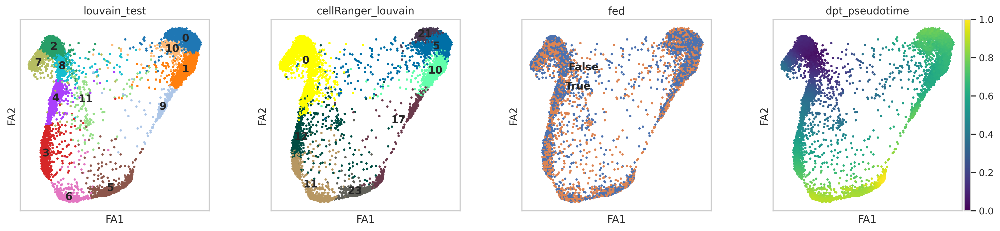
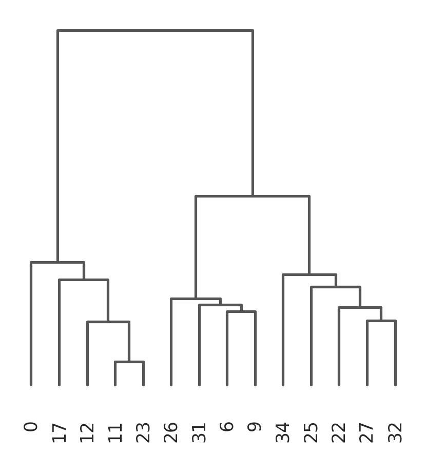

Pseudotime Analysis
Wed Aug 19 16:45:58 UTC 2020
Download Data import requests
from tqdm import tnrange, tqdm_notebook
def download_file(doi,ext):
url = 'https://api.datacite.org/dois/'+doi+'/media'
r = requests.get(url).json()
netcdf_url = r['data'][0]['attributes']['url']
r = requests.get(netcdf_url,stream=True)
#Set file name
fname = doi.split('/')[-1]+ext
#Download file with progress bar
if r.status_code == 403:
print("File Unavailable")
if 'content-length' not in r.headers:
print("Did not get file")
else:
with open(fname, 'wb') as f:
total_length = int(r.headers.get('content-length'))
pbar = tnrange(int(total_length/1024), unit="B")
for chunk in r.iter_content(chunk_size=1024):
if chunk:
pbar.update()
f.write(chunk)
return fname
#Kallisto bus clustered starvation data, h5ad
download_file('10.22002/D1.1796','.gz')
#Starvation h5ad data, all nonzero genes included, filtered for 'real cells' from de-multiplexing
download_file('10.22002/D1.1797','.gz')
/ usr / local / lib / python3 . 6 / dist - packages / ipykernel_launcher . py : 18 : TqdmDeprecationWarning : Please use ` tqdm . notebook . trange ` instead of ` tqdm . tnrange `
HBox ( children = ( FloatProgress ( value = 0 . 0 , max = 479106 . 0 ), HTML ( value = '' )))
HBox ( children = ( FloatProgress ( value = 0 . 0 , max = 26058 . 0 ), HTML ( value = '' )))
'D1.1797.gz'
#Previously saved neuron subpopulations
download_file('10.22002/D1.1804','.gz')
#Previously saved neuron pseudotime adata
download_file('10.22002/D1.1806','.gz')
#Previously saved nematocyte pseudotime adata
download_file('10.22002/D1.1805','.gz')
/ usr / local / lib / python3 . 6 / dist - packages / ipykernel_launcher . py : 18 : TqdmDeprecationWarning : Please use ` tqdm . notebook . trange ` instead of ` tqdm . tnrange `
HBox ( children = ( FloatProgress ( value = 0 . 0 , max = 1595 . 0 ), HTML ( value = '' )))
HBox ( children = ( FloatProgress ( value = 0 . 0 , max = 10910 . 0 ), HTML ( value = '' )))
HBox ( children = ( FloatProgress ( value = 0 . 0 , max = 12207 . 0 ), HTML ( value = '' )))
'D1.1805.gz'
#Human ortholog annotations
download_file('10.22002/D1.1819','.gz')
#Panther annotations
download_file('10.22002/D1.1820','.gz')
#GO Terms
download_file('10.22002/D1.1822','.gz')
/ usr / local / lib / python3 . 6 / dist - packages / ipykernel_launcher . py : 18 : TqdmDeprecationWarning : Please use ` tqdm . notebook . trange ` instead of ` tqdm . tnrange `
HBox ( children = ( FloatProgress ( value = 0 . 0 , max = 528 . 0 ), HTML ( value = '' )))
HBox ( children = ( FloatProgress ( value = 0 . 0 , max = 515 . 0 ), HTML ( value = '' )))
HBox ( children = ( FloatProgress ( value = 0 . 0 , max = 227 . 0 ), HTML ( value = '' )))
'D1.1822.gz'
#Previously saved ranked pseudotime genes
#Nematocyte trajectory (ranked genes)
#!wget --quiet https://caltech.box.com/shared/static/u19vzppejvt6ky3ysqptt2ia2dqozpkf
download_file('10.22002/D1.1808','.gz')
#Neuron trajectory (ranked genes)
#!wget --quiet https://caltech.box.com/shared/static/ippfug3xt20etmyx08egzpipgmyfc17m
download_file('10.22002/D1.1807','.gz')
/ usr / local / lib / python3 . 6 / dist - packages / ipykernel_launcher . py : 18 : TqdmDeprecationWarning : Please use ` tqdm . notebook . trange ` instead of ` tqdm . tnrange `
HBox ( children = ( FloatProgress ( value = 0 . 0 , max = 135 . 0 ), HTML ( value = '' )))
HBox ( children = ( FloatProgress ( value = 0 . 0 , max = 134 . 0 ), HTML ( value = '' )))
'D1.1807.gz'
#Install packages
!pip install --quiet anndata
!pip install --quiet scanpy
!pip install --quiet louvain
�[K |████████████████████████████████| 122kB 5.8MB/s
�[K |████████████████████████████████| 10.2MB 3.7MB/s
�[K |████████████████████████████████| 51kB 6.3MB/s
�[K |████████████████████████████████| 71kB 9.1MB/s
�[?25h Building wheel for sinfo (setup.py) ... �[?25l�[?25hdone
�[K |████████████████████████████████| 2.2MB 4.4MB/s
�[K |████████████████████████████████| 3.2MB 28.2MB/s
�[?25h
Import Packages #Import Packages
import random
import pandas as pd
import anndata
import scanpy as sc
import numpy as np
import scipy.sparse
import warnings
warnings.filterwarnings('ignore')
from sklearn.neighbors import (KNeighborsClassifier,NeighborhoodComponentsAnalysis)
from sklearn.pipeline import Pipeline
from sklearn.manifold import TSNE
#import scrublet as scr
import matplotlib.pyplot as plt
%matplotlib inline
sc.set_figure_params(dpi=125)
import seaborn as sns
sns.set(style="whitegrid")
#Read in annotations
from io import StringIO
hg_ortho_df = pd.read_csv(StringIO(''.join(l.replace('|', '\t') for l in open('D1.1819'))),
sep="\t",header=None,skiprows=[0,1,2,3])
hg_ortho_df[['XLOC','TCONS']] = hg_ortho_df[13].str.split(expand=True)
hg_ortho_df[['Gene','gi']] = hg_ortho_df[3].str.split(expand=True)
hg_ortho_df['Description']= hg_ortho_df[11]
panther_df = pd.read_csv('D1.1820',
sep="\t",header=None) #skiprows=[0,1,2,3]
goTerm_df = pd.read_csv('D1.1822',
sep=" ",header=None) #skiprows=[0,1,2,3]
#Read in saved data
bus_fs_combo = anndata.read('D1.1796')
print(bus_fs_combo)
bus_fs_raw = anndata.read('D1.1797')
bus_fs_raw.obs['cellRanger_louvain'] = pd.Categorical(bus_fs_combo.obs['cellRanger_louvain'])
bus_fs_raw.obs['fed'] = pd.Categorical(bus_fs_combo.obs['fed'])
bus_fs_raw.obs['orgID'] = pd.Categorical(bus_fs_combo.obs['orgID'])
bus_fs_raw.obs['annos'] = pd.Categorical(bus_fs_combo.obs['annos'])
bus_fs_raw.obs['annosSub'] = pd.Categorical(bus_fs_combo.obs['annosSub'])
bus_fs_raw.uns['annos_colors'] = bus_fs_combo.uns['annos_colors']
bus_fs_raw.uns['cellRanger_louvain_colors'] = bus_fs_combo.uns['annosSub_colors']
#bus_fs_raw.uns['annosSub_colors'] = bus_fs_combo.uns['annosSub_colors']
print(bus_fs_raw)
neuron_subpops = anndata.read('D1.1804')
print(neuron_subpops)
AnnData object with n_obs × n_vars = 13673 × 8696
obs : 'batch' , 'n_counts' , 'n_countslog' , 'louvain' , 'leiden' , 'orgID' , 'fed' , 'starved' , 'fed_neighbor_score' , 'cellRanger_louvain' , 'annos' , 'new_cellRanger_louvain' , 'annosSub'
var : 'n_counts' , 'mean' , 'std'
uns : 'annosSub_colors' , 'annos_colors' , 'cellRanger_louvain_colors' , 'cellRanger_louvain_sizes' , "dendrogram_['new_cellRanger_louvain']" , 'dendrogram_new_cellRanger_louvain' , 'fed_colors' , 'fed_neighbor_score_colors' , 'leiden' , 'leiden_colors' , 'louvain' , 'louvain_colors' , 'neighbors' , 'new_cellRanger_louvain_colors' , 'orgID_colors' , 'paga' , 'pca' , 'rank_genes_groups' , 'umap'
obsm : 'X_nca' , 'X_pca' , 'X_tsne' , 'X_umap'
varm : 'PCs'
obsp : 'connectivities' , 'distances'
AnnData object with n_obs × n_vars = 13673 × 46716
obs : 'batch' , 'cellRanger_louvain' , 'fed' , 'orgID' , 'annos' , 'annosSub'
uns : 'annos_colors' , 'cellRanger_louvain_colors'
AnnData object with n_obs × n_vars = 1387 × 2000
obs : 'batch' , 'cellRanger_louvain' , 'fed' , 'n_counts' , 'louvain_neur' , 'test_louvain'
var : 'n_counts' , 'highly_variable' , 'means' , 'dispersions' , 'dispersions_norm' , 'mean' , 'std'
uns : 'cellRanger_louvain_colors' , 'hvg' , 'louvain' , 'louvain_neur_colors' , 'neighbors' , 'pca' , 'rank_genes_groups' , 'test_louvain_colors' , 'umap'
obsm : 'X_pca' , 'X_tsne' , 'X_umap'
varm : 'PCs'
obsp : 'connectivities' , 'distances'
#Functions used
#Random forest regression to determine best genes to predict pseudotime
from sklearn.ensemble import RandomForestRegressor
from sklearn.inspection import permutation_importance
def runRegr_dptPseudotime(adata,adata_scaled,label='dpt_pseudotime'):
X = adata.X
if scipy.sparse.issparse(X):
X = X.toarray()
#80% training data
perc = 0.8
n = np.int(perc*X.shape[0])
np.random.seed(0)
indices = np.random.choice(X.shape[0], n, replace=False,)
X_train = X[indices,:]
y = adata_scaled.obs[label]
y_train = y[indices]
X_test = X[[i for i in range(0,X.shape[0]) if i not in indices],:]
y_test = y[[i for i in range(0,X.shape[0]) if i not in indices]]
regr = RandomForestRegressor(random_state=42,max_samples=perc)
regr.fit(X_train, y_train)
print(regr.score(X_test, y_test))
result = permutation_importance(regr, X_test, y_test, n_repeats=5, random_state=42)
return result
#Convert filtered results to dataframe
def resToDF(result,adata):
neur_gene_res = pd.DataFrame()
neur_gene_res['Genes'] = adata.var_names
neur_gene_res['Mean'] = result.importances_mean
neur_gene_res['Std'] = result.importances_std
neur_gene_res= neur_gene_res.sort_values('Mean', axis=0, ascending=False)
neur_gene_res= neur_gene_res[neur_gene_res.Mean > 0]
print(len(neur_gene_res.Genes))
return neur_gene_res
#Make dataframe, with 100 marker genes for each cluster + annotations
def annotateResDF(resultDF):
orthoGene = []
orthoDescr = []
pantherNum = []
pantherDescr = []
goTerms = []
genes = resultDF.Genes
for g in genes:
sub_df = hg_ortho_df[hg_ortho_df.XLOC.isin([g])]
panth_df = panther_df[panther_df[0].isin([g])]
go_df = goTerm_df[goTerm_df[0].isin([g])]
if len(sub_df) > 0:
#Save first result for gene/description
orthoGene += [list(sub_df.Gene)[0]]
orthoDescr += [list(sub_df.Description)[0]]
else:
orthoGene += ['NA']
orthoDescr += ['NA']
if len(panth_df) > 0:
pantherNum += [list(panth_df[1])]
pantherDescr += [list(panth_df[2])]
else:
pantherNum += ['NA']
pantherDescr += ['NA']
if len(go_df) > 0:
goTerms += [list(go_df[1])]
else:
goTerms += ['NA']
resultDF['orthoGene'] = orthoGene
resultDF['orthoDescr'] = orthoDescr
resultDF['pantherID'] = pantherNum
resultDF['pantherDescr'] = pantherDescr
resultDF['goTerms'] = goTerms
return resultDF
#list(neurons.uns['rank_genes_groups']['names']['1'])
#Order cells in cell-by-gene matrix by pseudotime
def orderTime(adata):
sortTime = np.argsort(adata.obs['dpt_pseudotime'])
newNames = adata.obs_names[list(sortTime)]
adataRet = adata[newNames,:]
return adataRet
Generate Pseudotime Trajectories for I-cells, Neurons, Nematocytes Select cell types 0, 11, 12, 17, 23 6, 9, 26 & 31 which represent the i-cells, Neural cells, and Nematocytes for downstream analysis
#Subset data
#I-cells, neurons, nematocytes
big_lin = bus_fs_raw[bus_fs_raw.obs['cellRanger_louvain'].isin([31,26,6,9,0,11,12,17,23])]
sc.pp.filter_cells(big_lin, min_counts=0)
sc.pp.filter_genes(big_lin, min_counts=1)
sc.pp.normalize_per_cell(big_lin, counts_per_cell_after=1e4)
big_lin_copy = big_lin.copy()
sc.pp.log1p(big_lin)
big_lin.raw = sc.pp.log1p(big_lin_copy, copy=True)
sc.pp.highly_variable_genes(big_lin, n_top_genes=4000,n_bins=50)
big_lin = big_lin[:,big_lin.var['highly_variable']]
big_lin
Trying to set attribute ` . obs ` of view , copying .
View of AnnData object with n_obs × n_vars = 4064 × 4000
obs : 'batch' , 'cellRanger_louvain' , 'fed' , 'orgID' , 'annos' , 'annosSub' , 'n_counts'
var : 'n_counts' , 'highly_variable' , 'means' , 'dispersions' , 'dispersions_norm'
uns : 'annos_colors' , 'cellRanger_louvain_colors' , 'log1p' , 'hvg'
Cluster and embed cells for pseudotime visualization
#Large lineage PAGA embedding
big_lin_scaled = big_lin
sc.pp.scale(big_lin_scaled, max_value=10)
sc.tl.pca(big_lin_scaled, n_comps=60)
#sc.pl.pca_variance_ratio(neur_lin_scaled, log=True)
sc.pp.neighbors(big_lin_scaled,n_neighbors=50, n_pcs=15,method='gauss')
sc.tl.louvain(big_lin_scaled,resolution=1,key_added='louvain_test')#Clustering algorithm,resolution=0.5
sc.tl.paga(big_lin_scaled, groups='louvain_test',)
sc.pl.paga(big_lin_scaled, color=['louvain_test'])

#Add neuron subpopulation labels
labels = []
for c in big_lin_scaled.obs_names:
if c in neuron_subpops.obs_names:
labels += [neuron_subpops[c,:].obs['louvain_neur'][0]]
else:
labels += ['rest']
big_lin_scaled.obs['louvain_neur'] = pd.Categorical(labels)
sc.tl.draw_graph(big_lin_scaled, init_pos='paga')
#sc.pl.draw_graph(big_lin_scaled, color=['louvain_test','louvain_neur','cellRanger_louvain','fed'], legend_loc='on data',color_map='viridis',alpha=0.5)
#Calculate pseudotime with diffusion components (dim reduction)
big_lin_scaled.uns['iroot'] = np.flatnonzero(big_lin_scaled.obs['louvain_test'] == '0')[0]
sc.tl.diffmap(big_lin_scaled,n_comps=10)
sc.tl.dpt(big_lin_scaled,n_dcs=10)
sc.pl.draw_graph(big_lin_scaled, color=['louvain_test','annos','fed','dpt_pseudotime','louvain_neur'],
color_map='viridis') #legend_loc='on data'
*c* argument looks like a single numeric RGB or RGBA sequence, which should be avoided as value-mapping will have precedence in case its length matches with *x* & *y*. Please use the *color* keyword-argument or provide a 2-D array with a single row if you intend to specify the same RGB or RGBA value for all points.
*c* argument looks like a single numeric RGB or RGBA sequence, which should be avoided as value-mapping will have precedence in case its length matches with *x* & *y*. Please use the *color* keyword-argument or provide a 2-D array with a single row if you intend to specify the same RGB or RGBA value for all points.

sc.pl.draw_graph(big_lin_scaled, color=['XLOC_038831','XLOC_010752','XLOC_018937','XLOC_012650','XLOC_001436','XLOC_030068'],
legend_loc='on data',color_map='plasma',s=80)

Make adata object including more variable genes to rank by their importance/relevance to the pseudotime trajectories
#Make adata for doing regression (more variable genes included)
big_lin_reg = bus_fs_raw[bus_fs_raw.obs['cellRanger_louvain'].isin([31,26,6,9,0,11,12,17,23])]
sc.pp.filter_cells(big_lin_reg, min_counts=0)
sc.pp.filter_genes(big_lin_reg, min_counts=1)
sc.pp.normalize_per_cell(big_lin_reg, counts_per_cell_after=1e4)
big_lin_copy = big_lin_reg.copy()
sc.pp.log1p(big_lin_reg)
big_lin_reg.raw = sc.pp.log1p(big_lin_copy, copy=True)
#For shorter demonstration use 4000 option
#sc.pp.highly_variable_genes(big_lin_reg, n_top_genes=4000,n_bins=10)
sc.pp.highly_variable_genes(big_lin_reg, n_top_genes=15000,n_bins=10)
big_lin_reg = big_lin_reg[:,big_lin_reg.var['highly_variable']]
Trying to set attribute `.obs` of view, copying.
#Convert pseudotime valeus to quantiles of pseudotime
big_lin_reg.obs['dpt_pseudotime'] = big_lin_scaled.obs['dpt_pseudotime']
nbins = 20 #quantiles
rangeList = range(0,nbins)
strList = [str(i) for i in rangeList]
cnido = big_lin_reg[big_lin_reg.obs['cellRanger_louvain'].isin([0,11,12,17,23])]
cnido.obs['quantTimeBlocks'] = pd.qcut(cnido.obs['dpt_pseudotime'],q=nbins,labels=strList)
neuro = big_lin_reg[big_lin_reg.obs['cellRanger_louvain'].isin([0,26,31,9,6])]
neuro.obs['quantTimeBlocks'] = pd.qcut(neuro.obs['dpt_pseudotime'],q=nbins,labels=strList)
Trying to set attribute `.obs` of view, copying.
Trying to set attribute `.obs` of view, copying.
Trying to set attribute `.obs` of view, copying.
cnido.write('nemato.h5ad')
neuro.write('neuro.h5ad')
AnnData object with n_obs × n_vars = 4064 × 4000
obs : 'batch' , 'cellRanger_louvain' , 'fed' , 'orgID' , 'annos' , 'annosSub' , 'n_counts' , 'louvain_test' , 'louvain_neur' , 'dpt_pseudotime'
var : 'n_counts' , 'highly_variable' , 'means' , 'dispersions' , 'dispersions_norm' , 'mean' , 'std'
uns : 'annos_colors' , 'cellRanger_louvain_colors' , 'log1p' , 'hvg' , 'pca' , 'neighbors' , 'louvain' , 'paga' , 'louvain_test_sizes' , 'louvain_test_colors' , 'draw_graph' , 'iroot' , 'diffmap_evals' , 'fed_colors' , 'louvain_neur_colors'
obsm : 'X_pca' , 'X_draw_graph_fa' , 'X_diffmap'
varm : 'PCs'
obsp : 'distances' , 'connectivities'
#Create embedding for plotting pseudotime genes
big_lin_reg.uns['paga'] = big_lin_scaled.uns['paga']
big_lin_reg.uns['draw_graph'] = big_lin_scaled.uns['draw_graph']
big_lin_reg.obsm['X_draw_graph_fa'] = big_lin_scaled.obsm['X_draw_graph_fa']
sc.pl.draw_graph(big_lin_reg, color=['XLOC_019434','XLOC_018937'],
legend_loc='on data',color_map='plasma')
big_lin_reg.write('pseudoEmbed_fullLineage.h5ad')
Run Regression Will take a while. Can plot with saved results instead of re-running model or run with less genes
#Run regression
result_cnido = runRegr_dptPseudotime(cnido,cnido,'quantTimeBlocks')
result_neuro = runRegr_dptPseudotime(neuro,neuro,'quantTimeBlocks')
0.9252565851716389
0.8683961569750528
#Make dataframe from regression results
cnido_gene_res = resToDF(result_cnido,cnido)
neuro_gene_res = resToDF(result_neuro,neuro)
cnido_gene_res = annotateResDF(cnido_gene_res)
neuro_gene_res = annotateResDF(neuro_gene_res)
cnido_gene_res.head()
Genes
Mean
Std
orthoGene
orthoDescr
pantherID
pantherDescr
goTerms
629
XLOC_001436
0.264423
0.018149
NA
NA
[PTHR35378]
[FAMILY NOT NAMED]
[nan]
631
XLOC_001437
0.075968
0.006814
NA
NA
NA
NA
NA
3242
XLOC_008048
0.066162
0.005565
LOC102723665
PREDICTED: basic proline-rich protein-like [H...
[PTHR24023:SF718]
[COL-129, ISOFORM A]
[GO:0032502,GO:0016337,GO:0007398,GO:0007498,G...
7688
XLOC_021750
0.017792
0.001821
ACTG1
actin, cytoplasmic 2 [Homo sapiens]
[PTHR11937:SF347]
[BETA-ACTIN-LIKE PROTEIN 3-RELATED]
[GO:0000910,GO:0005856,GO:0005200,GO:0006897,G...
12680
XLOC_039385
0.015740
0.002258
CPE
carboxypeptidase E preproprotein [Homo sapiens]
[PTHR11532:SF68]
[CARBOXYPEPTIDASE E]
[GO:0016787,GO:0005615,GO:0044238,GO:0019538,G...
cnido_gene_res.to_csv('cnido_stem_lineage_pseudotime_genes.csv')
neuro_gene_res.to_csv('neuro_stem_lineage_pseudotime_genes.csv')
Plot Results of Regression (Pseudotime Heatmaps) def returnVal(i):
if i == i:
i= i.replace("[","")
i = i.replace("]","")
i= i.replace("'","")
i = i.replace("'","")
return i
else:
return 'nan'
neuro_gene_res = pd.read_csv('D1.1807')
print(neuro_gene_res.head())
cnido = anndata.read('D1.1805')
neuro = anndata.read('D1.1806')
print(neuro)
Unnamed : 0 ... goTerms 0 8941 ... NaN 1 4963 ... NaN 2 4295 ... [ nan ] 3 4164 ... [ nan ] 4 10102 ... [ 'GO:0006996,GO:0044238,GO:0005622,GO:0032991,...
[5 rows x 9 columns ] AnnData object with n_obs × n_vars = 2662 × 14999 obs : 'batch' , 'cellRanger_louvain' , 'fed' , 'orgID' , 'annos' , 'annosSub' , 'n_counts' , 'dpt_pseudotime' , 'quantTimeBlocks' var : 'n_counts' , 'highly_variable' , 'means' , 'dispersions' , 'dispersions_norm' uns : 'annos_colors' , 'cellRanger_louvain_colors' , 'hvg' Plot expression of genes of interest over time, after ordering cells by pseudotime coordinates so that expression is shown over 'time'
#Order cells by pseudotime (0 --> 1)
orderCnido = orderTime(cnido)
orderNeuro = orderTime(neuro)
#Plot interesting genes from ranking over time
neuroPeps = ['XLOC_042761','XLOC_019434','XLOC_017097','XLOC_030120']
n_names = ['*PP1','*PP5','*PP11','PP17']
early = ['XLOC_038831','XLOC_041836','XLOC_010226','XLOC_041854','XLOC_045448'] #'XLOC_041854','XLOC_045448'
e_names = ['Semaphorin','NACA2','aGPCR 3','LRR protein 1','LRR protein 2']
late = ['XLOC_034623','XLOC_008333','XLOC_040506','XLOC_012560','XLOC_044075',
'XLOC_043514','XLOC_034910','XLOC_001206',
'XLOC_003576','XLOC_002941','XLOC_008328','XLOC_044176','XLOC_017070'] #'XLOC_034910','XLOC_040506'
l_names = ['SIX-like','ACTR3','CAB39','Clytia-Specific 4','ASNS',
'POLR1A','NCALD','aGPCR 1',
'KCNA6','aGPCR 2','TRIO','Clytia-Specific 5','aGPCR 4']
total = early+neuroPeps+late
total_names = e_names+n_names+l_names
set(neuroPeps).intersection(late)
toAddNeuroDict_Other = {}
for i in range(0,len(total)):
toAddNeuroDict_Other[total[i]] = total_names[i]
labels= [toAddNeuroDict_Other[i] for i in total]
orderNeuro = orderNeuro[:,total]
orderNeuro.var['names'] = labels
sc.set_figure_params(scanpy=True, fontsize=12)
sc.pl.heatmap(orderNeuro, total_names, groupby=None,
show_gene_labels=True,use_raw=False,standard_scale='var',
interpolation='gaussian',cmap='plasma',swap_axes=True,gene_symbols= 'names')
Trying to set attribute ` . var ` of view , copying .

Final Pseudotime Plots Plots include a mixture of neuro-development related genes
#Add more pseudotime ranked genes for heatmap
toAddNeuro = ['XLOC_037011','XLOC_031923','XLOC_010412','XLOC_030920','XLOC_026271','XLOC_025094','XLOC_018937','XLOC_037278','XLOC_009173','XLOC_033489',
'XLOC_010752','XLOC_045293','XLOC_033337','XLOC_012650']
toAddNeuroNames = ['TUBA4A','PCNA','GLUL','bHLH TF 1','DCX','CALR','bHLH TF 2','TAGLN-2','H2AFV','PRDX4',
'bHLH TF 3','*SOX-10','CL1','Clytia-Specific 3']
toAddNeuroDict = {}
for i in range(0,len(toAddNeuro)):
toAddNeuroDict[toAddNeuro[i]] = toAddNeuroNames[i]
toAddCnido = ['XLOC_001436','XLOC_008048','XLOC_030068','XLOC_011074','XLOC_041365','XLOC_041836','XLOC_011949','XLOC_015554']
toAddCnidoNames = ['*Mcol3/4','Mcol','*Dkk3','TUBA1C','TF IIIA','NACA2','BOP1','Mos3']
toAddCnidoDict = {}
for i in range(0,len(toAddCnido)):
toAddCnidoDict[toAddCnido[i]] = toAddCnidoNames[i]
#Determine where var_names is in list of genesToPlot
allGenes = {**toAddCnidoDict, **toAddNeuroDict}
allGenes = {**allGenes,**toAddNeuroDict_Other} #'XLOC_002941','XLOC_043514','XLOC_037011','XLOC_040506','XLOC_003576',
forPlotNeuro = ['XLOC_041836','XLOC_026271','XLOC_031923','XLOC_010226',
'XLOC_018937','XLOC_045293',
'XLOC_034623','XLOC_040506','XLOC_012560','XLOC_030920','XLOC_010752',
'XLOC_038831','XLOC_001206','XLOC_042761','XLOC_017097',
'XLOC_002941','XLOC_030120','XLOC_019434',
'XLOC_034910','XLOC_012650']
forPlotCnido = ['XLOC_011949','XLOC_011074','XLOC_041836','XLOC_015554','XLOC_041365','XLOC_030068','XLOC_008048','XLOC_001436']
labelsCnido = [allGenes[i] for i in forPlotCnido]
labelsNeuro = [allGenes[i] for i in forPlotNeuro]
#Order cells by pseudotime (0 --> 1)
orderCnido = orderTime(cnido)
orderNeuro = orderTime(neuro)
orderCnido = orderCnido[:,forPlotCnido]
orderCnido.var['names'] = labelsCnido
orderNeuro = orderNeuro[:,forPlotNeuro]
orderNeuro.var['names'] = labelsNeuro
Trying to set attribute ` . var ` of view , copying .
Trying to set attribute ` . var ` of view , copying .
sc.set_figure_params(scanpy=True, fontsize=12)
sc.pl.heatmap(orderCnido, labelsCnido, groupby=None,
show_gene_labels=True,use_raw=False,standard_scale='var',
interpolation='gaussian',cmap='plasma',swap_axes=True,gene_symbols='names',figsize=(8,2),
save='cnido_gauss_BigLinTimeGenes.pdf')
WARNING : saving figure to file figures / heatmapcnido_gauss_BigLinTimeGenes . pdf

sc.set_figure_params(scanpy=True, fontsize=12)
sc.pl.heatmap(orderNeuro, labelsNeuro, groupby=None,
show_gene_labels=True,use_raw=False,standard_scale='var',
interpolation='gaussian',cmap='plasma',swap_axes=True,gene_symbols='names',figsize=(5,4),
save='neuro_gauss_BigLinTimeGenes.pdf')
WARNING : saving figure to file figures / heatmapneuro_gauss_BigLinTimeGenes . pdf

Check gland cell trajectories and/or hair cells #Subset data
#Gland cells: 27,25,32,34,22 + no 31,26,6,9
#Actually including sensory hair cell populations, 5, 10, 21
gland_lin = bus_fs_raw[bus_fs_raw.obs['cellRanger_louvain'].isin([5,10,21,0,11,12,17,23])]
sc.pp.filter_cells(gland_lin, min_counts=0)
sc.pp.filter_genes(gland_lin, min_counts=1)
sc.pp.normalize_per_cell(gland_lin, counts_per_cell_after=1e4)
sc.pp.log1p(gland_lin)
sc.pp.highly_variable_genes(gland_lin, n_top_genes=4000,n_bins=50)
gland_lin = gland_lin[:,gland_lin.var['highly_variable']]
gland_lin
Trying to set attribute ` . obs ` of view , copying .
View of AnnData object with n_obs × n_vars = 4094 × 4000
obs : 'batch' , 'cellRanger_louvain' , 'fed' , 'orgID' , 'annos' , 'annosSub' , 'n_counts'
var : 'n_counts' , 'highly_variable' , 'means' , 'dispersions' , 'dispersions_norm'
uns : 'annos_colors' , 'cellRanger_louvain_colors' , 'log1p' , 'hvg'
#Large lineage PAGA embedding
gland_lin_scaled = gland_lin
sc.pp.scale(gland_lin_scaled, max_value=10)
sc.tl.pca(gland_lin_scaled, n_comps=60)
#sc.pl.pca_variance_ratio(neur_lin_scaled, log=True)
sc.pp.neighbors(gland_lin_scaled,n_neighbors=100, n_pcs=60,method='gauss')
sc.tl.louvain(gland_lin_scaled,resolution=2,key_added='louvain_test')#Clustering algorithm,resolution=0.5
sc.tl.paga(gland_lin_scaled, groups='louvain_test',)
sc.pl.paga(gland_lin_scaled, color=['louvain_test'])

sc.tl.draw_graph(gland_lin_scaled, init_pos='paga') #'louvain_test'
sc.pl.draw_graph(gland_lin_scaled, color=['louvain_test','cellRanger_louvain','fed'],
legend_loc='on data',color_map='viridis',alpha=0.5)

#Calculate pseudotime with diffusion components (dim reduction)
gland_lin_scaled.uns['iroot'] = np.flatnonzero(gland_lin_scaled.obs['louvain_test'] == '2')[0]
sc.tl.diffmap(gland_lin_scaled,n_comps=10)
sc.tl.dpt(gland_lin_scaled,n_dcs=10)
sc.pl.draw_graph(gland_lin_scaled, color=['louvain_test','cellRanger_louvain','fed','dpt_pseudotime'],
legend_loc='on data',color_map='viridis')

sc.tl.dendrogram(gland_lin_scaled,'cellRanger_louvain',linkage_method='ward')
gland_lin_scaled.uns['dendrogram_cellRanger_louvain'] = gland_lin_scaled.uns["dendrogram_['cellRanger_louvain']"]
sc.pl.dendrogram(gland_lin_scaled,'cellRanger_louvain')

<matplotlib.axes._subplots.AxesSubplot at 0x7fbfef430908>